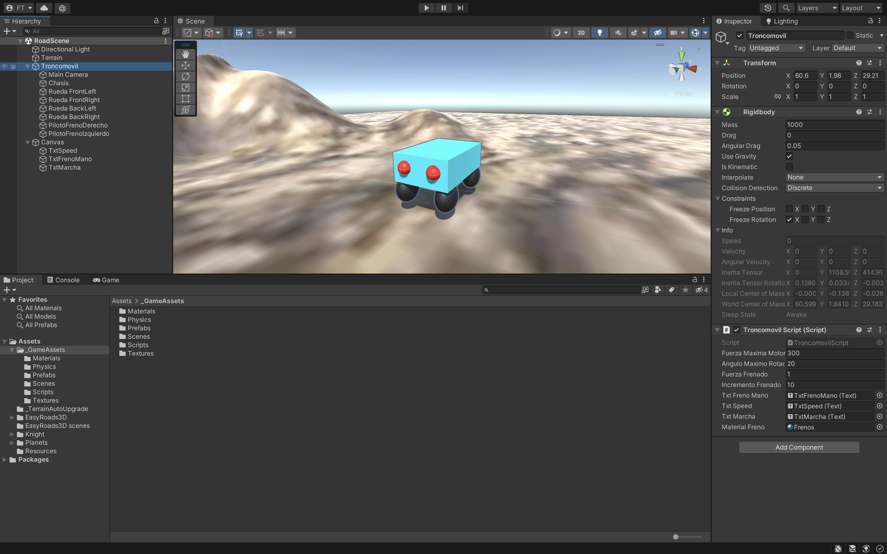
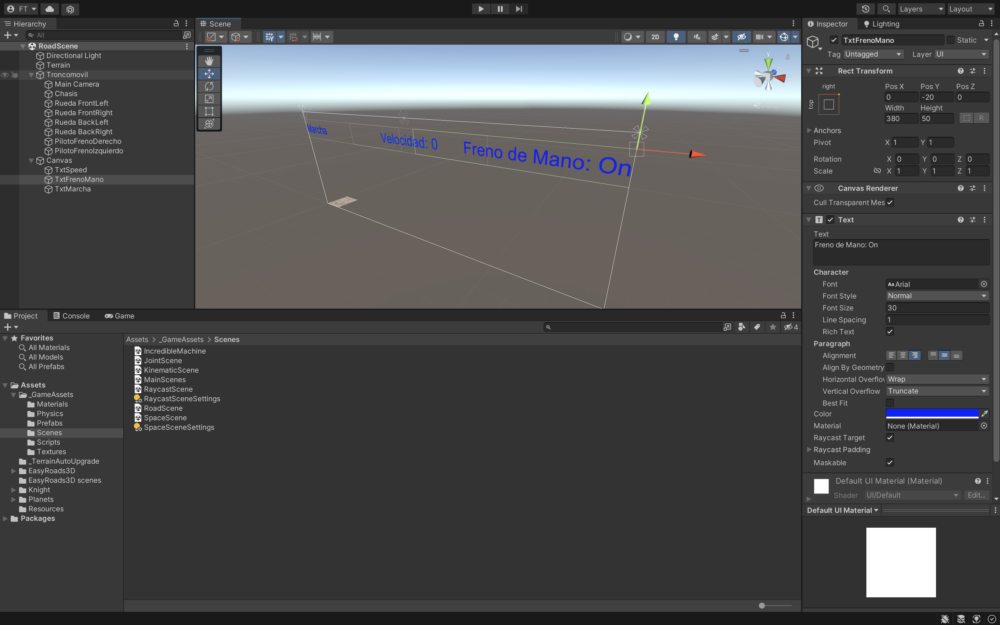

Tendremos un terreno o un plano y un coche con faros:
• Tendrá un freno (tecla F) y al soltar el freno el coche podrá andar hacia delante con la
flecha hacia arriba.
• Flecha atrás lo podremos parar y las luces se activarán.
• Usaremos las ruedas de delante para la dirección.
• Y las ruedas de atrás para que avancen.
Y un Canvas para mostrar Texto Speed, Texto Freno de mano y Texto Marcha.
_GameAssets
• Materials.
o Frenos.
o Materiales que se crean a partir de Texturas poniendolos en el Albedo. (Si lo necesitamos)
• Scenes.
o RoadScene.
• Scripts.
o Troncomovil.cs.
• Textures para el suelo...
Tendremos que crear dentro de esta escena:
• Terrain.
• TroncoMovil.
o Main Camera. La pondremos en la parte de atrás del coche.
o Chasis.
o Rueda FrontLeft.
o Rueda FrontRight.
o Rueda BackLeft.
o Rueda BackRight.
o PilotoFrenoDerecho.
o PilotoFrenoIzquierdo.
• Canvas.
o TxtSpeed.
o TxtFrenoMano.
o TxtMarcha.


El TroncoMovil mira hacia el forward (Z hacia delante). Componentes:
• Script TroncoMovil.cs.
• El Objeto Troncomovil tendra un RigidBody con una masa de 1000 y esta formado por:
o Main Camera.
o Chasis Cubo con un BoxCollider.
o Las 4 Ruedas tienen un componente de WheelCollider. Con los valores que vienen por
defecto.
o Los 2 Pilotos de freno que tienen asociado un material que se modificara para que
se vea más intenso.
• Variables
o float vPos, hPos para recoger las flechas pulsadas.
o WheelCollider wcFrontL, wcFrontR, wcBackL, wcBackR.
o float fuerzaMaximaMotor = 300.
o float anguloMaximoRotacion = 20.
o float fuerzaFrenado = 10.
o int incrementoFrenado = 10.
o bool frenoManoActivo = false.
o Textos para el canvas de Freno de Mano, Velocidad y Marcha.
o Float fSpeed.
o Material materialFreno.
• Start().
o Hay que recoger el WheelCollider las ruedas o las pasamos como parámetros.
o Texto Freno de Mano Off.
o Desactivar el materialFreno modificando su material con DissableKeyword con _EMISSION.
• Update().
o Recoger en variable fSpeed el RigidBody de la velocity.magnitude y la mostramos en el Canvas.
- La magnitud nos devuelve la longitud del vector. Es la distancia entre su punto de origen
y su punto final del vector.
o Si le damos a la “F” activamos o desactivamos el Freno de mano para que se pueda mover o no el
coche con GetKeyDown().
- Variable bool frenoManoactivo y cambiar el texto del canvas.
• FixedUpdate() Haremos el movimiento.
o Recoger el axis Vertical y Horizontal en variables hPos y vPos con GetAxis().
o Ruedas delanteras llevan la dirección. (flechas derecha e izquierda).
- Modificamos el ángulo de giro y las multiplicamos por el axis horizontal.
- wcFrontL y wcFrontR.steerAngle = anguloMaximoRotacion * hPos.
o Si no tiene el freno puesto.
- Si la vPos > 0.
• Texto Marcha adelante.
• Desactivar luz de frenado.
• Método para SoltarFreno().
• Mover el coche hacia delante con la flecha hacia arriba. Dándole a las ruedas
traseras el movimiento para que avance con motorTorque = fuerzaMaximaMotor * vPos.
- Si vPos < 0 y fSpeed > 0.01 es que le he dado a la flecha hacia abajo la vPos será
negativa y frenaremos el coche si está andando comprobando la velocidad.
• Texto Esta frenado.
• Activa luz de frenado.
• Método Frenar().
- Si vPos < 0 y fSpeed <= 0.01 es que le he dado a la flecha hacia abajo la VPos será
negativa y si está frenado ira marcha atrás cuando le dé a las flechas derecha e izquierda.
• Texto Marcha atrás.
• Método SoltarFreno().
• Ruedas traseras .motorTorque = fuerzaMaximaMotor * vPos.
o Y si tiene el freno el coche se clava con el Método Frenar().
• Tendremos 2 métodos:
o Frenar().
- fuerzaFrenado += incrementoFrenado;.
- Le daremos una fuerza a la propiedad “brakeTorque” con la variable fuerzaFrenado a
las 4 ruedas.
o SoltarFreno().
- Le daremos 0 a la propiedad “brakeTorque” de las 4 ruedas.